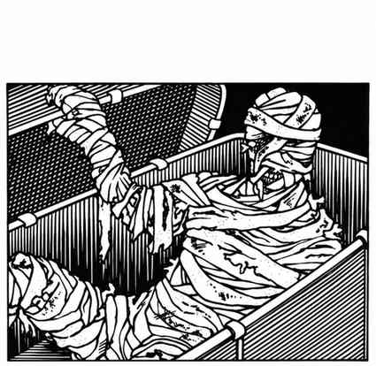

木乃伊 · Mummy
 |
|
木乃伊是同时存在于正常物质位面与正物质位面的不死生物，常出现在自己的坟墓、类似的埋葬地或遗迹附近。它们因邪恶而保留着生命的表象，试图摧毁遇到的任何活物。对生命的亵渎憎恨与怪异的不死状态赋予它们强大力量，手臂一击可造成 1–12 点伤害；木乃伊的腐败触碰命中即会施加腐烂疾病。疾病会在 1–6 个月内致命，每经过一个月，患病生物永久失去 2 点魅力。只有魔法祛病术可以治愈；疾病会使所有治疗伤势的法术失效，感染者恢复伤势的速度只有正常的 10%。
在 6 寸内看到木乃伊会引起强烈恐惧与厌恶；除非魔法豁免成功，否则目标因惊骇麻痹 1–4 轮。人数会带来勇气：每当生物数量相对于木乃伊超过 6 比 1，所有生物的豁免骰获得 +1；若是人类面对木乃伊，每人额外获得 +2。
木乃伊只能被魔法武器伤害，即使如此也只承受一半正常伤害，向下取整（5 变 2，3 变 1，1 变 0）。睡眠、魅惑、定身和寒冷类法术对它们无效；毒素与麻痹也不能伤害它们。施展死者复生术会将木乃伊变回普通人类（自然具有 7 级战士能力），除非木乃伊在魔法豁免中成功。火焰仍可造成伤害：火把命中造成 1–3 点，燃油第一轮造成 1–8 点、第二轮造成两倍伤害；魔法火焰每骰伤害获得 +1。泼洒圣水时，每一瓶命中造成 2–8 点伤害。被木乃伊杀死的生物会腐烂，除非在 6 轮内同时施展祛病术和死者复生术，否则无法复活。